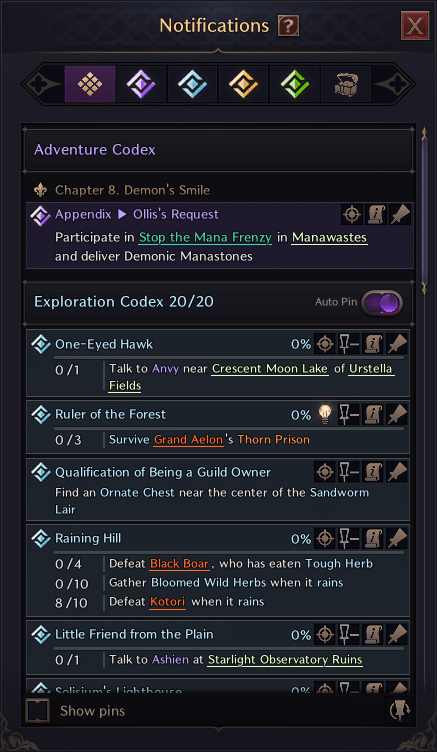

GUIA LEVELING RÁPIDO (1-50)

INTRODUÇÃO:
Neste guia, você aprenderá tudo o que precisa saber sobre como começar, o que priorizar em sua jornada e chegar ao level 50 o mais rápido possível.
LINK PASSO A PASSO DE COMO OTIMIZAR SEU LEVELING:

DICAS GERAIS DE NIVELAMENTO
Uma das coisas mais importantes que você deve saber ao subir de nível com nosso guia de nivelamento é quais tipos de missões você tem disponíveis e a aparência de cada ícone de objetivo.
- As missões roxas são as suas “missões da história principal”. Essas missões são, de longe, a prioridade mais importante em seu processo de nivelamento. Cada capítulo da história principal fornece grandes quantidades de EXP, catapultando você por vários níveis.
- Quests azuis são as “missões secundárias” em Throne and Liberty. Missões secundárias podem ser encontradas em todo o mundo conforme você avança. Cada zona tem suas próprias missões secundárias e, como resultado, oferece diferentes quantidades de EXP e recompensas. É muito importante acompanhar as missões secundárias e completá-las dentro da sua faixa de nível.
- Quests amarelas são seus “Contratos”. Esses contratos são contratados pelo Comerciante Contratual na maioria das grandes cidades. Cada contrato fornece vários materiais de crescimento, EXP e Sollant como recompensa, mas também Abyss Contract Tokens!
- Quests verdes é o indicador para “Guild Quests”. As missões da guilda normalmente oferecem boas recompensas para você e para a sua guilda. Isso também inclui EXP e Sollant. Como resultado, não deixe de participar com sua Guilda em todas as atividades!
EVENTOS DINÂMICOS
Eventos Dinâmicos em TL ocorrem a cada duas horas – às vezes com mais frequência. Esses eventos fornecem excelente EXP de preenchimento, ao mesmo tempo que fornecem Sollant e materiais de atualização. Como resultado, participar de Eventos Dinâmicos entre as missões é vital para seu sucesso no nivelamento! Os eventos podem vir na forma de eventos baseados em coleções, eventos de chefes mundiais e muito mais. Finalmente, os World Boss Events também aparecem a cada duas horas – os Bosses também oferecem ótimos itens e recompensas de EXP.
CAPÍTULOS DO CÓDICE
A missão da história principal de Trono e Liberdade é dividida em um prelúdio e 10 capítulos do Codex. Os requisitos de nível para cada desbloqueio de capítulo são os seguintes:
- Capítulo 0 – Prelúdio: Nível 1
- Capítulo 1: Prelúdio Completo
- Capítulo 2: Nível 5
- Capítulo 3: Nível 11
- Capítulo 4: Nível 19
- Capítulo 5: Nível 24
- Capítulo 6: Nível 29
- Capítulo 7: Nível 34
- Capítulo 8: Nível 40
- Capítulo 9: Nível 45
- Capítulo 10: Nível 50
NÍVEL 1-24
A principal prioridade ao longo de cada capítulo é focar apenas em completar todas as missões da história principal daquele capítulo. Como resultado, você verá seu nível aumentar várias vezes em um curto espaço de tempo. No entanto, você normalmente acaba 1-2 níveis abaixo do nível exigido para o próximo capítulo. É aqui que você deve se concentrar nas próximas missões secundárias. As missões secundárias são desbloqueadas e reveladas no mapa somente quando você ativa o waypoint da região. Após atingir o nível 10, a primeira coisa que você deve fazer é ingressar em uma Guilda. Depois de concluir o Capítulo 4, você deverá estar em uma das cidades centrais ; Vila Vienta.
Quando você atingir o limite de EXP por volta do nível 22, certifique-se de completar todas as missões secundárias ativas que dão boa EXP na área. Depois que elas forem concluídas, você pode passar para as próximas 1 ou 2 áreas próximas para desbloquear suas missões secundárias tocando no waypoint. Finalmente, vá para Monolith Wasteland e Abandoned Stonemason Town para coletar essas missões secundárias e completar o máximo que puder.
Para preencher o restante da EXP, certifique-se de participar de Eventos Dinâmicos, usar sua coleta de minérios/árvores/ervas e matar mobs para chegar a 24. Você tem a opção de pegar e completar alguns Contratos, porém, desaconselhamos fazer isso é muito cedo. Isso se deve ao fato de os contratos serem importantes para materiais de atualização no nível 50.
MASMORRAS
É importante notar que no nível 20, seu primeiro Círculo Dimensional de Paola será desbloqueado – Spectre’s Abyss. O Círculo Dimensional de Paola é um conjunto de masmorras exclusivas, feitas para grupos de 6 pessoas! Faça algumas dgs lvl20 para completar algumas missões fáceis que tem dentro delas para ganhar EXP adicional e melhorar sua experiência de nivelamento. Lembre-se de guardar seus pontos de dg para quando for fazer dgs lvl 50, recomendo gastar nesse momento somente se tiver acumulado.
NÍVEL 24-40
Continue seguindo os capítulos do Codex para a missão da história principal sempre que possível. Assim como no nível 1-25, também é provável que você encontre alguma desaceleração nos níveis 27, 32 e 38. Essas desacelerações precisam ser preenchidas novamente com missões paralelas, eventos e masmorras. Você também pode utilizar as Abyss Dungeons (as Open World Dungeons) para farmar Sollant, EXP e EXP de Arma. Nesse ponto do Nivelamento, você deve ficar de olho nas recompensas finais que recebe em cada capítulo. Pegue as armas e equipamentos/acessórios que correspondam à construção que você deseja fazer – eles serão fortes até você substituí-los por equipamentos épicos.
No nível 40, você terá acesso a outra nova masmorra do Círculo Dimensional, o Templo do Rugido.
Assim como recomendamos na seção de níveis 1 a 24, vá para as primeiras áreas próximas à zona apropriada ao seu nível. Neste caso, Moonlight Desert, Sandworm Lair e Daybreak Shore. Desbloqueie o waypoint para ganhar boa EXP nas missões paralelas.
NÍVEL 40-50
O trecho final de 10 níveis ocorre ao redor do Nordeste e Noroeste do mapa. Essas áreas incluem o Shattered Temple, Ruins of Turayne, Hill of Purification, Greyclaw Forest, Akidu Valley e Fonos Basin. Como resultado, as principais cidades em que você operará durante o nivelamento são Canina Village e Watcher’s Post. É muito importante completar o máximo possível de missões da história principal e começar imediatamente a completar as missões secundárias, desbloqueando o waypoint de cada zona.
Outra questão importante é o escalonamento da coleta EXP neste nível. No nível 34+, você começa a ganhar entre 1k e 2,5k EXP por ação de coleta. Como resultado, certifique-se de fazer isso tanto quanto possível para preencher as lacunas!
Como sempre, acessar os Eventos dinâmicos, Dungeons e Abyss Dungeons também ajuda muito. Se você seguir esse padrão, deverá atingir o nível 50 rapidamente e não terá problemas para passar pelas seções de desaceleração!
DICAS FINAIS DE NIVELAMENTO
- Em certos pontos do nivelamento, você pode perceber que está acima do limite total de sua Solicitação de Contrato. Como resultado, você pode usar alguns deles para ajudar seu ganho de EXP nas seções de desaceleração sem prejudicar seu pós-50.
- Sempre pressione “J” para inspecionar seu Codex e verificar as missões que você pode fazer em cada área – isso às vezes pode resolver muita confusão.
- Mantenha seu Quest Tracker no lado direito da tela, fixando as missões relevantes perto de sua posição enquanto remove outras.
- Depois de atingir o nível 50, certifique-se de usar o máximo possível de contratos disponíveis. certifique-se de escolher apenas os Contratos que possuem Pedras de Crescimento ou Bolsas da Sorte como recompensas.
- Certifique-se de fazer uma party sempre que possível, devido ao bônus de EXP que você recebe. Isso pode ser especialmente útil se você for até Abyss Dungeons para farmar mobs para EXP, Sollant e EXP de armas.
- Lembre-se de não subestimar a coleta de EXP, especialmente após o nível 34+. Certos locais não contestados podem render mais de 200 mil EXP por hora!
- Atualizar suas armas e suas habilidades de dano com a maior freqüência possível tornará a limpeza do conteúdo uma experiência muito mais tranquila.
- Ao selecionar suas recompensas na história principal, certifique-se de que as estatísticas
- É importante saber com antecedência qual combinação de armas você mais deseja jogar. No início do jogo, é muito difícil relançar totalmente – então escolha com sabedoria!
RECOMENDAÇÃO FINAL:
Siga o padrão de “Missão Principal (quests roxas) -> Missão Lateral(quests azuis) -> Eventos dinâmicos, Masmorras e Atividades de Guilda -> Grinding Mob em syleu F1 -> pequena quantidade de Contratos(quests amarelas)” para um nível 50 rápido.